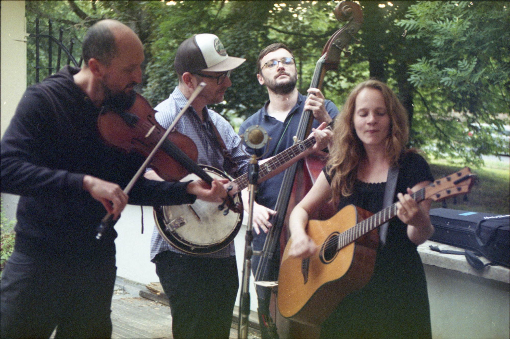
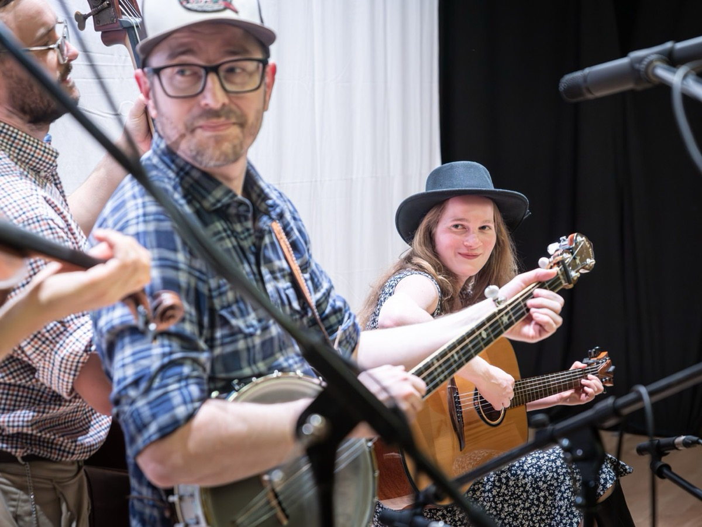
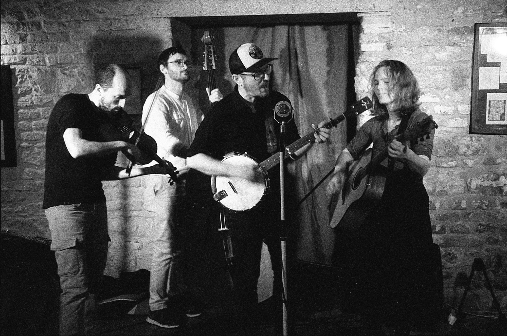
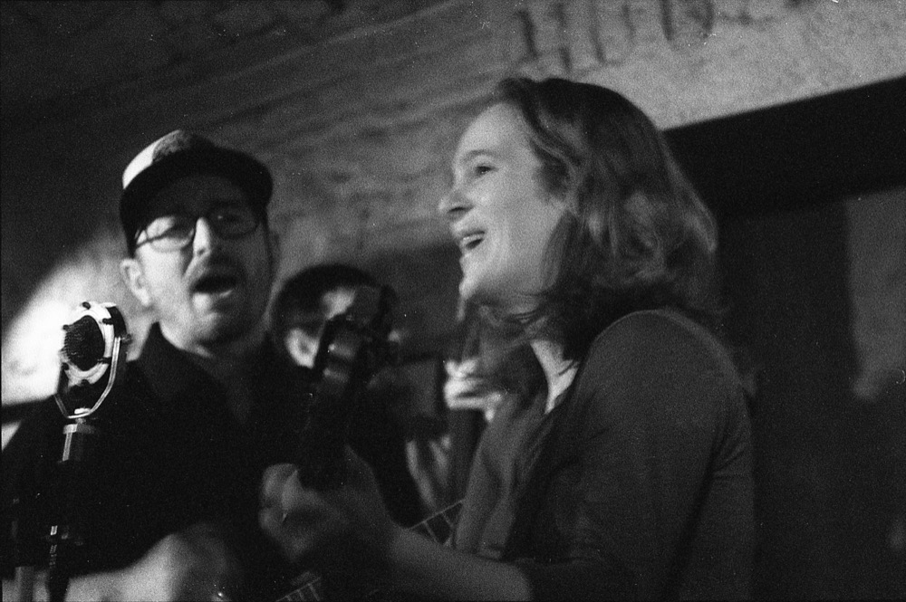
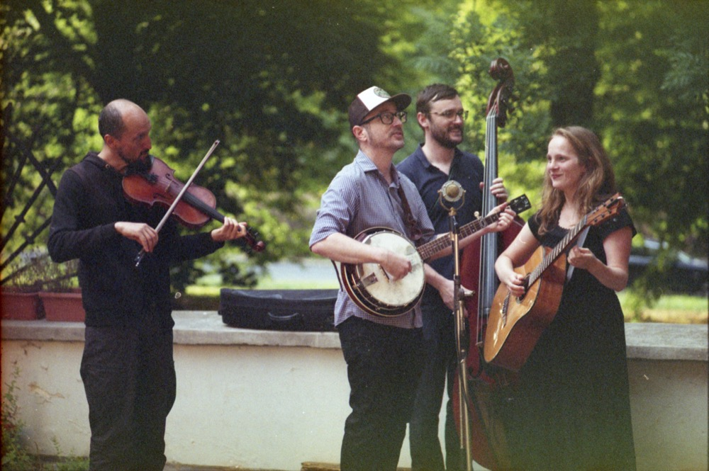
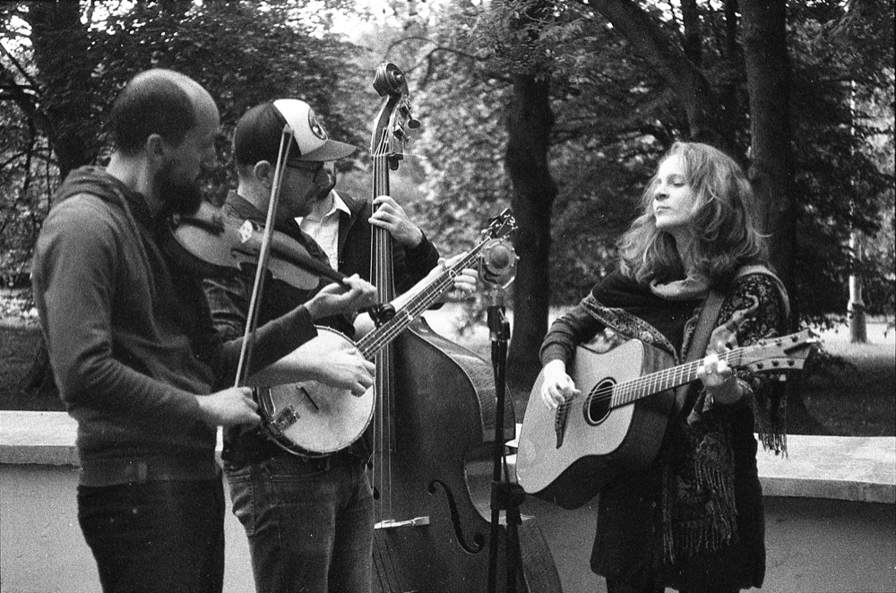
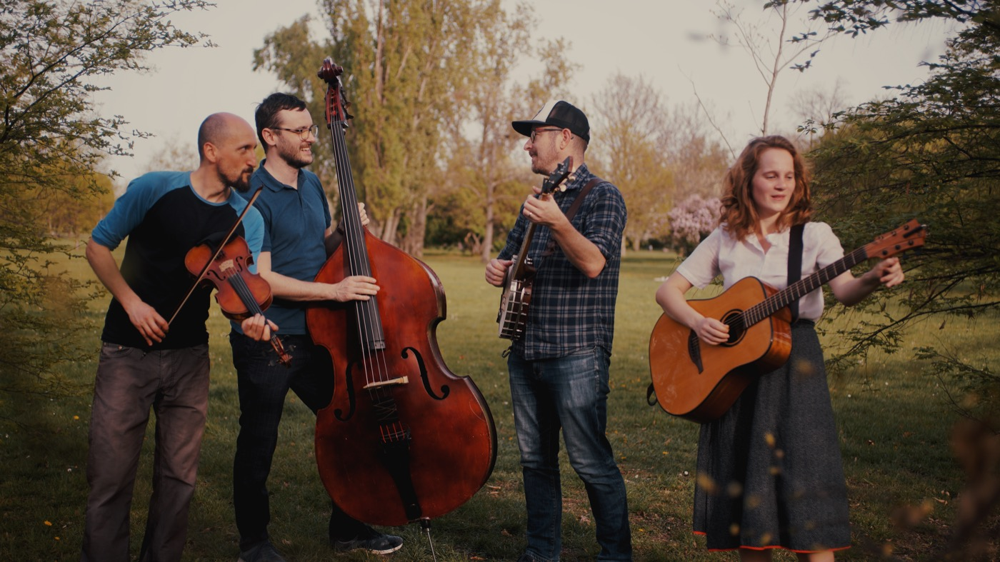
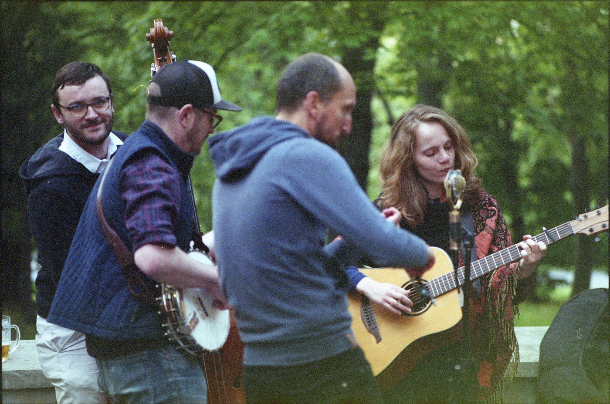
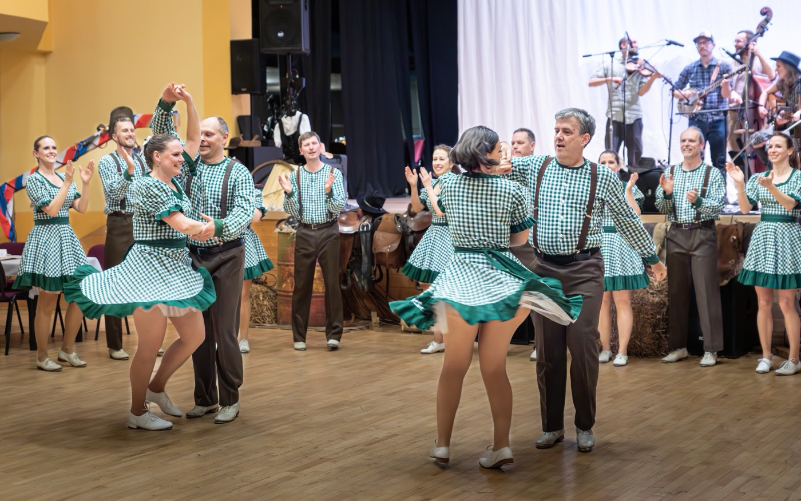

"This husband-and-wife-fronted group makes for the best old-time sound in Prague."
Prague, Czech Republic
About O nás
Table Mountain String Band is a four-piece group based out of Prague, Czech Republic, playing high-energy, driving old-time American fiddle tunes and folk songs. The band gets its name from an area not far from where Nick Jennings grew up, in Northern California. He fronts the group, playing clawhammer banjo, along with his wife Eliška Jennings, a native of Prague, on guitar. The couple's intertwined vocal harmonies and strong rhythms lay the groundwork for the band.
They are joined by Ludvík Jacek, also from Prague, who has played fiddle from an early age, developing a versatile and enchanting sound. Hailing from Moravia, Petr Pijáček brings a solid foundation in Moravian folklore to the group. His dancing bass lines fill out their sound and hold it all together.
Table Mountain String Band je čtyřčlenná skupina z Prahy hrající svižné a energické americké lidové písně, jež se stylově řadí k tzv. old-time žánru. Jméno si zvolila podle místa v Severní Kalifornii, nedaleko něhož vyrůstal clawhammer banjista Nick Jennings, který stojí v čele kapely spolu se svou ženou, rodilou pražačkou Eliškou Jennings, která hraje na kytaru. Jejich provázané vokály a pevný rytmus tvoří jádro osobitého zvuku.
Svými houslemi je doplňuje Ludvík Jacek z Prahy a okolí, jenž si za léta hraní napříč škálou různých žánrů vypracoval vlastní znamenitý styl. Kontrabasista Petr Pijáček s moravskými kořeny dotváří zvuk kapely svým procítěným hraním a tančícími basovými linkami, které drží vše pohromadě.








Upcoming Shows Koncerty
Get in Touch Kontakt